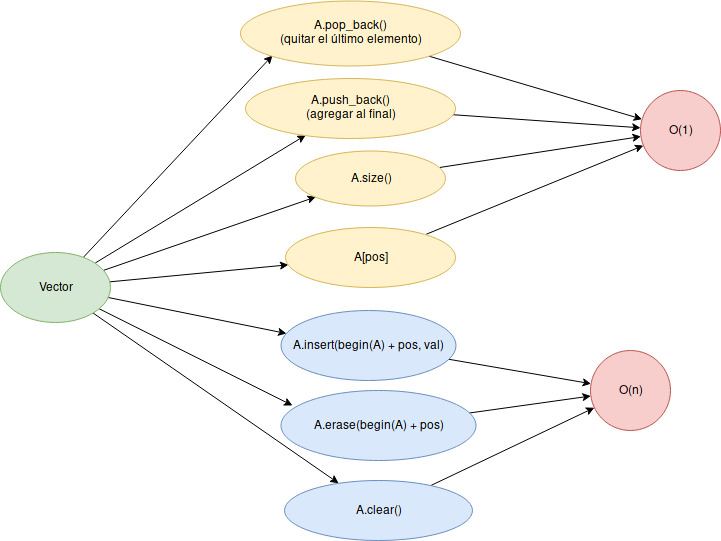

Clase 03: STL
13-01-2020
“Don’t reinvent the wheel!”
STL is a collection of libraries of C++ that we can use in the contests. It gives us common data structures (array, stack, set, priority_queue, map, …), common algorithms (sort, next_permutation, binary_search, lower_bound, upper_bound), common functions (input-output (I/O), sqrt, pow, abs, min, max, …)
First of all, lets understand what happens in a simple hello world program.
#include <bits/stdc++.h>
using namespace std;
int main () {
cout << "Hello World!" << '\n';
return 0;
}(The explanation will be given in class)
Extra: You can also practice competitive programming in other languages.
Examples:
But, as mentioned in the first class, C++ is usually better for its efficiency and simplicity.
Tipos de datos enteros
int\([-2^{31}, 2^{31}) \approx [-10^9, 10^9]\)long long\([-2^{63}, 2^{63}) \approx [-10^{18}, 10^{18}]\)
Tipos de datos flotantes
- float
- double
- long double
Operaciones aritméticas
- addition: x + y
- subtraction: x - y
- multiplication: x * y (what happens if \(x = y = 10^9\) and
xandyareint) - division: x / y (take care if
x,yareintand you want the result infloat) - exponenciation: pow(x, y) (the output is in
double) - module: a % b (what happens if
bis zero? why?)
Order or precedence
int < long long < float < double < long double
Examples:
int x = 1;
long long y = 8;
auto z = x + y; // long longint x = 1;
float y = 8;
auto z = x + y; // floatAnother useful data type is string.
In cplusplus.com you will find a reference of how to work with strings.
string s;
// input
cin >> s; // In the same way you can read a int, long long, float, ...
// You can iterate it in this way
for (int i = 0; i < s.size(); i++) {
// s[i]: get the i-th element
cout << s[i] << '\n'; // In the same way you can output a int, long long, float, ...
}
s[2] = 'b'; // modify the element in position 2
// You can also print the whole string
cout << s << '\n';
// Yout can also iterate in this way
for (char elem: s) {
cout << elem;
}
cout << '\n'; // what happens without this line ?
s += 'a'; // you can add append a letter or string
cout << s.substr(2, 2) << '\n'; // what does this function do ?
// The comparisson is like this (take care of not using just one '=' )
if (s == "hola") cout << "ok" << '\n';You will need a vector in almost all of your contests, so its very important to know how to use it.
In cplusplus.com you will find a reference of how to work with vectors.
vector <int> arr;
// Add a element to the end of the vector - O(1)
arr.push_back(123);
arr.push_back(987);
arr.push_back(343);
arr.push_back(134);
arr.push_back(345);
// Delete the last element - O(1)
arr.pop_back();
// Insert a element in the i-th position - O(n)
int i = 2;
arr.insert(begin(arr) + i, 234);
// Delete a element in the i-th position - O(n)
i = 1;
arr.erase(begin(arr) + i);
// Copy the vector - O(n)
vector <int> arrCopy = arr;
// We can iterate a vector in this way
for (int arr_i: arr) {
// do something
}
// We can also use 'auto'
for (auto elem: arr) {
cout << elem << '\n';
}
// We can also iterate in this way
// arr.size() returns the number of element of the vector - O(1)
for (int i = 0; i < arr.size(); i++) {
// arr[i]: get the i-th element - O(1)
cout << arr[i] << '\n';
}
// Delete all the elements - O(n)
arr.clear();You can find the more common methods of vectors and its complexity in this image.

A deque gives us all the methods of a vector and two more:
push_front: Insert a element in the begining O(1)
pop_front: Erase the first element O(1)
Read what these functions do:
Question: How would you declare a matrix ?
In cplusplus.com you will find a reference of how to work with sets.
set <int> S;
// Insert a element - O(log n)
S.insert(3);
S.insert(4);
S.insert(-100);
S.insert(-345);
// The elements are stored in ascending order
for (auto x: S) {
cout << x << endl;
}
// Check if a element is in the set - O(log n)
if (S.count(4) > 0) {
cout << "4 is in S\n";
}
// You can also check that using the method find
if (S.find(4) != end(S)) {
cout << "4 is in S" << endl;
}
// Delete a elemento - O(log n)
S.erase(4);
// You can also delete in this way
S.erase(S.find(-100));
// If we store the iterator - O(log n)
// auto it = S.find(val) - O(log n)
// Then we can erase the element - O(1)
// S.erase(it)You can find the more common methods of sets and its complexity in this image.

Read about multisets.
In cplusplus.com you will find a reference of how to work with maps.
map <string, int> my_map;
// Insert a element - O(log n)
my_map["hola"] = 1;
my_map["mundo"] = 5;
// The elements are stored in ascending order
for (auto x: my_map) {
cout << x.first << ' ' << x.second << endl;
}
// Check if a element is in the map - O(log n)
if (my_map.count("hola") > 0) {
cout << "4 is in my_map\n";
}
// You can also check that using the method find
if (my_map.find("hola") != end(my_map)) {
cout << "4 is in my_map" << endl;
}
my_map["hola"] = 10;
for (auto x: my_map) {
cout << x.first << ' ' << x.second << '\n';
}
// Delete a elemento - O(log n)
my_map.erase("hola");
// You can also delete in this way
my_map.erase(my_map.find("mundo"));
// If we store the iterator - O(log n)
// auto it = my_map.find(val) - O(log n)
// Then we can erase the element - O(1)
// my_map.erase(it)The complexity of its operations is the same of a set.
With a struct we can create our own data type which can encapsulate other data type.
#include <bits/stdc++.h>
using namespace std;
struct MyStructure {
// we can declare attributes of different types
int var1;
double var2;
string var3;
MyStructure (int var1, double var2, string _var3):
var1(var1),
var2(var2) { // we can initialize the variables in this way
var3 = _var3; // ot in this way
}
void my_method () {
cout << var1 << ' ' << var2 << ' ' << var3 << '\n';
}
};
int main () {
MyStructure structure(18, 20.7, "hello world!");
structure.my_method(); // cal a method
structure.var1 = 19; // access an attribute
cout << structure.var3 << '\n';
return (0);
}Read about pair.
Read Antti Laaksonen.Competitive programmer’s handbook - chapter 1 y 4. Section 1.4 will help you understand common practice that you will find in competitive programming (which you eventually will use) and in Chapter 4 you will see more examples of how yo use vector, set, map and much more.
You may also be interested in reading:
You can find the contest here.
A: Chat Server’s Outgoing Traffic
Problem A: Chat Server’s Outgoing Traffic
Just implement what the problem says.
Code
#include <bits/stdc++.h>
#define all(A) begin(A), end(A)
#define rall(A) rbegin(A), rend(A)
#define sz(A) int(A.size())
#define pb push_back
#define mp make_pair
using namespace std;
typedef long long ll;
typedef pair <int, int> pii;
int main () {
ios::sync_with_stdio(false); cin.tie(0);
int ans = 0;
int cur = 0;
string s;
while (getline(cin, s)) {
if (s[0] == '+') {
cur++;
} else if (s[0] == '-') {
cur--;
} else {
int pos = 0;
while (s[pos] != ':') pos++;
ans += (sz(s) - pos - 1) * cur;
}
}
cout << ans << '\n';
return (0);
}B: Counting-out Rhyme
Problem B: Counting-out Rhyme
The constraints are small, just simulate what the problem says.
Code
#include <bits/stdc++.h>
#define all(A) begin(A), end(A)
#define rall(A) rbegin(A), rend(A)
#define sz(A) int(A.size())
#define pb push_back
#define mp make_pair
using namespace std;
typedef long long ll;
typedef pair <int, int> pii;
int main () {
ios::sync_with_stdio(false); cin.tie(0);
int n, k;
cin >> n >> k;
vector <int> arr(n);
iota(all(arr), 1);
int cur = 0;
for (int i = 0; i < k; i++) {
int a;
cin >> a;
a %= sz(arr);
while (a--) cur = (cur + 1) % sz(arr);
cout << arr[cur] << ' ';
arr.erase(begin(arr) + cur);
cur %= sz(arr);
}
return (0);
}C: Shuffle Hashing
Problem C: Shuffle Hashing
If you can construct h from p, then \(\exists s_1, s_2, q \mid h = s_1 + q + s_2\)
Then \(h[n:n + m] = q\) where n is the length \(s_1\) and m the length ofp. Then \(sort(h[n:n + m]) = sort(p)\). So, we just need to check if that is true for some value of \(n\).
Code
#include <bits/stdc++.h>
#define all(A) begin(A), end(A)
#define rall(A) rbegin(A), rend(A)
#define sz(A) int(A.size())
#define pb push_back
#define mp make_pair
using namespace std;
typedef long long ll;
typedef pair <int, int> pii;
int main () {
ios::sync_with_stdio(false); cin.tie(0);
int tc;
cin >> tc;
while (tc--) {
string p, h;
cin >> p >> h;
bool ok = false;
sort(all(p));
for (int i = 0; i < sz(h); i++) {
string x = h.substr(i, sz(p));
sort(all(x));
if (x == p) ok = true;
}
if (ok) cout << "YES\n";
else cout << "NO\n";
}
return (0);
}D: Free spots
Problem D: Free spots
For each test we can create a matrix of booleans initialized of false’s. Then, for each query \(x_1, y_1, x_2, y_3\) we set to true every element of the matrix in position \((r, c) \mid x_1 \leq r \leq x_2 \land y_1 \leq c \leq y_2\), assumming \(x_1 \leq x_2 \land y_1 \leq y_2\). So, after processing every query, the answer is the number of elements that are false.
Code
#include <bits/stdc++.h>
#define all(A) begin(A), end(A)
#define rall(A) rbegin(A), rend(A)
#define sz(A) int(A.size())
#define pb push_back
#define mp make_pair
using namespace std;
typedef long long ll;
typedef pair <int, int> pii;
int main () {
ios::sync_with_stdio(false); cin.tie(0);
int w, h, n;
while (cin >> w >> h >> n) {
if (w == 0 and h == 0 and n == 0) break;
vector <vector <bool>> vis(w + 1, vector <bool> (h + 1, false));
while (n--) {
int x1, y1, x2, y2;
cin >> x1 >> y1 >> x2 >> y2;
for (int r = min(x1, x2); r <= max(x1, x2); r++) {
for (int c = min(y1, y2); c <= max(y1, y2); c++) {
vis[r][c] = true;
}
}
}
int cnt = 0;
for (int r = 1; r <= w; r++) {
for (int c = 1; c <= h; c++) {
if (!vis[r][c]) cnt++;
}
}
if (cnt == 0) cout << "There is no empty spots.\n";
else if (cnt == 1) cout << "There is one empty spot." << '\n';
else cout << "There are " << cnt << " empty spots.\n";
}
return (0);
}